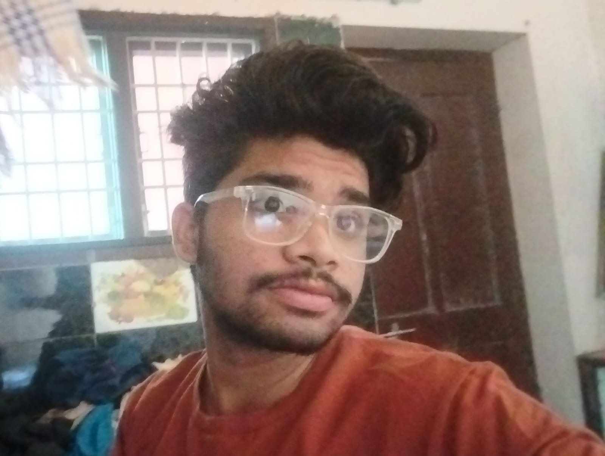
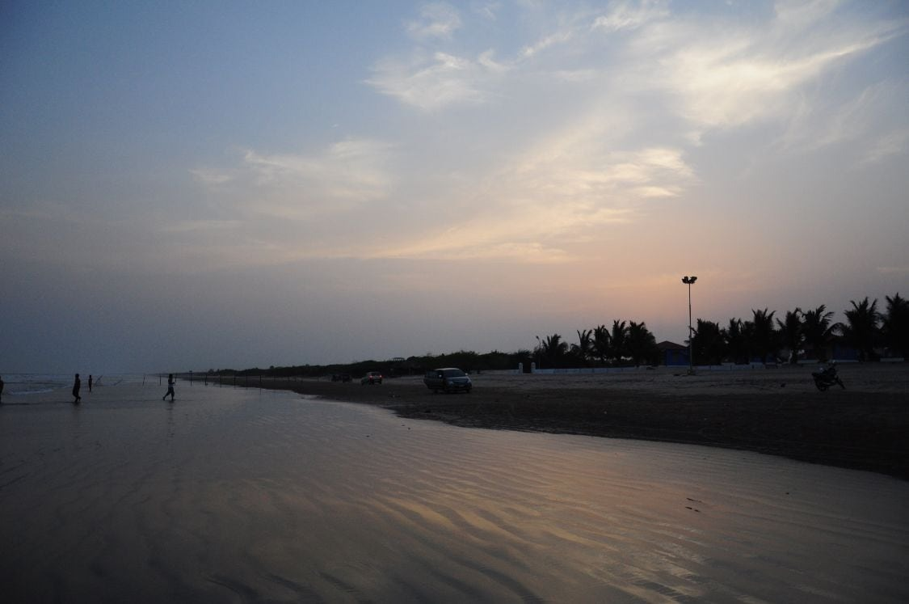
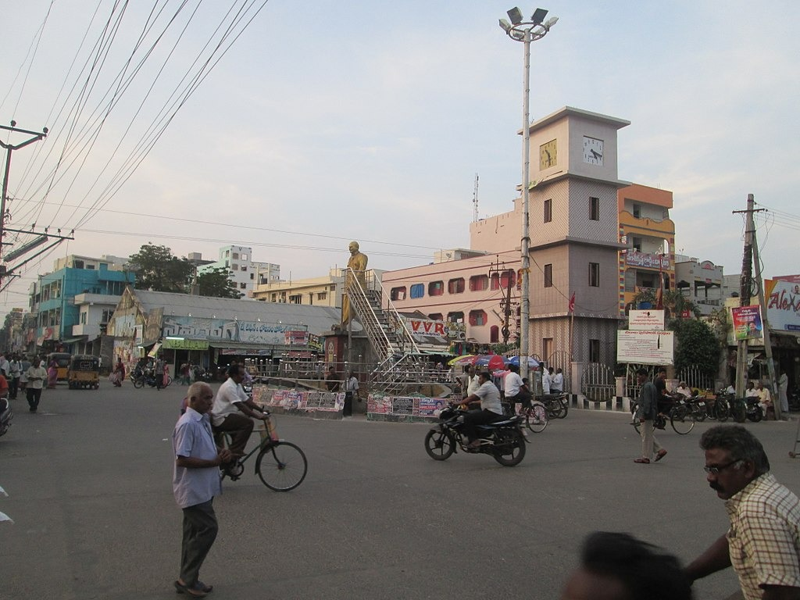

About Me
Hi, I'm Mahesh, a proud resident of Chirala. I love Coding, and I’m passionate about sharing my village's beauty with the world. My village Chirala is a small town in the Prakasam district of Andhra Pradesh, India: Known for Chirala is famous for its handloom industry, beaches, cashews, and panoramic views. It's also known for its cotton and polyester saris, including the Mangalagiri sari
Hi, I'm Mahesh, a 17-year-old aspiring full-stack web developer passionate about coding and creativity. I'm currently mastering HTML, CSS, JavaScript, and Next.js, and I love sharing the beauty of my village through my projects. With a drive for innovation and financial responsibility, I aim to make a positive impact and achieve big dreams.
About My Village
Ramapuram Beach
Considered to be one of the cleanest and most peaceful beaches, Ramapuram boasts of serenity wherein you can actually hear the waves crash and the birds chirp.
What To Expect?
Experience beautiful sunrises and sunsets, accompanied by some yummy local delicacies sold at the nearby shacks. You can even buy fresh seafood and get it cooked. Tips You can buy souvenirs from the small shops selling sea shells and other items. Do keep a good camera handy to capture excellent sunrise and sunset shots. While travelling to Chirala, keep medicines handy as they may not be readily available.Chirala Clock Tower
The city was also known as Kshirapuri, (క్షీరపురి, Telugu) which means "sea of milk" in Sanskrit.The city was carved out of Sudhanagaram, original name of Patha Chirala, that was granted to Chirala Anantharaju by Goparaju Ramanna, Minister of the Kakatiya king, Ganapati Deva, during Saka 1067 (1145 AD) as mentioned in the records obtained from the Madras Oriental Library. His descendant, Chirala Venkata Krishnudu, leased out the present Chirala area for raising a new township. Thus, present-day Chirala was born on 1604 AD.